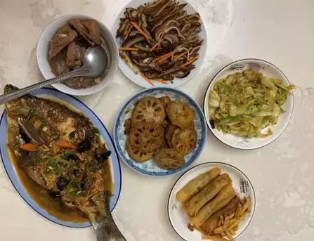
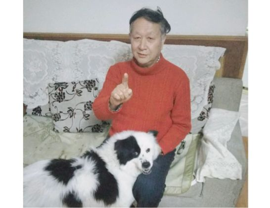
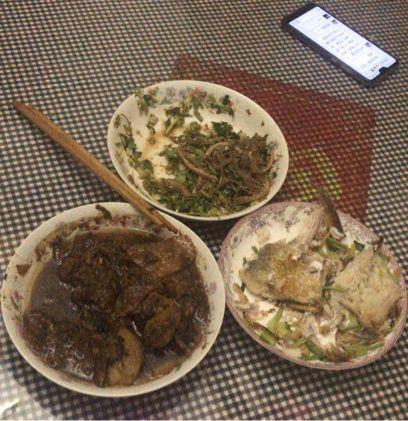
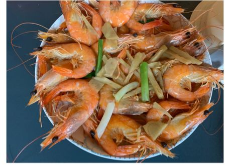

自我隔离，静待春天
原文链接 备份链接 这几天都睡得特别晚，昨天凌晨两点多，突然在网上刷到武汉即将停掉市内所有公共交通，包括地铁，关闭机场和火车站等外出方式的时候，心里咯噔了一下，一来是这个措施说明疫情形势很严峻，二来是这辈子万万没想到会遇见一次“封城”。 …


作者 | 薛芳 孙宏超 相欣 安然 马关夏 李越
编辑 | 康晓
出品｜深网·腾讯小满工作室
欢迎下载腾讯新闻APP，阅读更多优质资讯

平平安安就是年。
突袭而至的新病毒能阻止很多中国人在这个春节里团聚，但没有什么能阻断中国人心里永远不会割舍的亲情。
在大年三十那些或简单或粗糙或丰盛的普通的年夜饭里，长出了这个民族最坚定的信念和力量，我们的希望就在这里，在这些平凡的万家灯火里。

1
讲述者：林珊
坐标：汉阳鹦鹉大道
一月十九日，高铁从北京驶向武汉。一路行程非常顺利，没有拥挤，井然有序。
一路上的心情和往日回家并没有太大区别，时不时手机里会收到朋友的信息——“你回武汉了吗？”“记得戴口罩”…
车厢里播报着：还有十分钟就要到站了，终点站武汉。大家纷纷开始骚动起来，收拾行李，穿上外套，然后是戴上口罩。我坐在第5排，车厢里听到或北或南的口音，我回头一望，五颜六色的口罩都戴起来了——
泡沫口罩、棉布口罩、医用口罩、普通口罩、时尚口罩……
抵达武汉，妈妈来接我。在春运大潮里，出站口围堵了接亲人的、拉客的各种人群。
出了站，在一片深色的冬季服装里，见到我妈穿着一件豆沙色的棉袄小跑着向我迎过来，我第一反应是：生气。
“不是说好了戴口罩吗？”
事实上，来接人的几乎都没戴。迎面而来的人潮大家赤面相迎。
从我家到武汉站地铁50分钟车程，一路上不堵车，生活规划便利。但敏感的我想着这一路都是感染潜在区域，心里忍不住紧张。
我问：前阵子微信沟通，不说武汉都还戴口罩的吗？我妈似乎也感到委屈，第一阵传出这事，大家其实是重视的。
翻看聊天记录：
2019年12月31日
我妈：回来看地铁上好多戴口罩的
我爸：要防，要重视，但不要惊慌、不要害怕，认真对待
我：少坐地铁了，开车吧
我爸：这个主意好，点赞
2020年1月1日
武汉中心医院辟谣SARS系谣言！
此后，地铁戴口罩这事慢慢不了了之。
时间回到一月十九日，晚十一点，和妈妈外出回家的路上，我脑子里在想两件事：1、加强爸妈重视度；2、买口罩。
医药箱里，家里已经备上了一整盒口罩，用去了一半。基本储备是有的，但过年出街多，我想多备一些吧。一月二十日，小区口药店，口罩被放在门口最显眼的位置，10个一包的口罩，20元一包。大家排队将信将疑地买药，消炎的、治感冒的……
从北京寄的快递到家了，今年给家里置办的年货里，有一台人工智能小音箱，本想是给爸妈带回些小乐趣，没想后来却阴差阳错起到了别的作用。
一月二十一日，距离年夜饭还有3天时间。步行去外婆家吃饭，亲戚们对疫情的感知都在初级阶段。
手机里，越来越多的区域开始出现疑似病例，此时此刻大脑对数据似乎已经麻痹。电视里，各电视台滚动播放的是为春节准备的各色宣传和综艺节目。
拿出小音箱，开始实时播报关于武汉的新闻：新型冠状病毒新增病理、各地情况、专家观点、医院方案等信息大量涌来，爸妈也开始重视了。
但年夜饭将近，该如何和全家上下40多位家族成员一一解释呢？
按照家里的安排，一天在爸爸家族这边吃，一天在妈妈家族这边吃。武汉三镇，我家在汉阳，姐姐家在武昌，还有别的亲戚在汉口。如果一家人团聚，大家从三镇赶来，一路上的感染可能性不可估量。
只能靠同辈的力量去推动长辈了。
“姐，要不取消年夜饭吧。”
“我都可以，主要是你爸妈和我爸妈。”
“我去跟我爸妈说，你也做下你爸妈的工作。”
一天的时间里，通过电话把年饭全部取消，大家纷纷在家里自行隔离。
一月二十二日，新闻继续，市里领导接受央视记者采访，我们都期盼着能听到一些鼓励市民的话。
但这不重要，官方公布疫情数据还在上升。
“家里有远房亲戚已经去世了，不知道统计了没。”大家远程谈论着这些，微信群里，各种信息来来回回，新闻端的一头不断更新着新的数据、新的区域、新的专家观点、新的民间故事；另一头各类花样辟谣或谣言字眼随之闪烁。
家庭群里，大家转发着各自觉得重要的视频、截图、新闻消息。爸妈断断续续地、踉踉跄跄地跟随着信息的大流，希望能度过这一关，也试图能帮助家人。
时不时看到一则新闻不自觉的叫出声来。
“只戴口罩不行，特殊情况下还得护目镜。”
“口罩不能戴反了。”
“也可能没有症状，不发烧。”
……
不出门，不知道外面什么情况。出门，是为了“抢购”。
为了春节家里之前准备了一些食材，但过年还得一段日子，得买些菜。“卤菜家里有，菜薹、包菜、榨菜、土豆、面条、包子、馒头……能存放的得多买一些……”出门前开始列清单，但没想到了菜市场，已是另一翻天地。菜摊上可买的已零零星星，人潮涌动，而禽类降价也卖不出去。
一月二十三日凌晨，武汉宣布“封城”。
“早知道就不让你回家过年了。”
“不知道什么时候能回北京上班了。”
……
“武汉上空要喷洒消毒药了！”
“现在辟谣了。”
……
春节来了吗？
一月二十四日清晨，我妈一声令下，“快起来吃饭，增强体质！”
大家都抖擞了精神，这一天一大早电视机就开着，“换成综艺频道吧”，今天我家没有滚播新闻，爸妈想切换回过年的心情。
电视里，鼓舞节目、明星游戏十分热闹，看着节目，大家表情严肃。
“社区今天什么情况？”“我们现在还没有收到疫情相关的广播或者通知。”电梯里只有一则“温馨提示”，是关于电梯等公共设施的消毒处理，落款1月21日。
晚6点，三口之家的晚饭朴素而简单，主食饺子、菜薹加一碗藕汤。
饭后，大家都要吃两颗“糖蒜”，这种又甜又咸的食物，在平日是生活调剂，此时成为妈妈的一副秘方。“每天要吃，杀毒杀菌，增强体质。”

一家三口也达成一致——
“能吃饱就好，别大鱼大肉”
“得省着吃”
……
晚8点，和往年一样，春晚开始了，鼠年即将到来。
2
讲述者：詹芃
坐标：汉口解放大道
1月24日早上八点多，用医用酒精把卧室都擦了一遍后，我准备收拾一下去中百超市时买一些生活用品。现在武汉的超市除了中百超市和武商每天10:00-17:00还开门外，其他商超基本关门了。昨天出去啥都没买到，今天去买些生活用品，有朋友说，中百超市和武商可以买到日常的用品和吃的，但口罩是脱销了。
三十这天武汉暂时关闭离汉通道的第二天，已经没有了刚听到“封城”消息时那么焦虑了。当天接到武汉关闭离汉通道消息时，我正在收拾年货准备回阳新看父母，儿子还在收拾自己的作业本和要看的书。听到‘封城’消息后，当时脑子一懵，完全不知道自己要干什么。
“妈妈，走吧，我收拾好了”，12岁的儿子一句话，让我从震惊中缓了过来。“不去了，现在出不去了，打个电话跟爹爹（外公）和佳佳（外婆）打个电话拜年吧”。
我自己有车，当时想着去碰碰运气，因为我和老公、儿子自有疫情消息爆出来之后很注意，没有感冒和发烧，所以感觉回老家看看父母也不会有大问题，但‘封城’就说明，可能疫情远超自己想象，所以还是选择不出门，一家三口直接在家呆着。毕竟路途中会遇到什么情况难以把控。
对于武汉今年的突发情况，我和家人算是比较幸运，目前还没有人感冒。但如果以后，有家人或者朋友出现感冒和低烧的情况，我也会建议他们选择暂时别去医院，在家吃药、观察、多喝水等，因为一出现低烧就去医院的话，如果没有好的防护措施，在医院怕会出现交叉感染，情况会更严重。
前天，有朋友跟我打电话求助。这位朋友的父亲曾与去华南进货的采购朋友接触，现在双肺感染。作为确诊病人的亲密接触人，他和母亲先后去了同济、空医十一医院、六院、金银潭医院、蔡甸人民医院、七医院、中南医院等就诊，这些医院都说症状比较轻，需要确诊后等安排床位，建议先回见自行隔离。
我现在能做的只有按时消毒，尽量不出门，确保自己和家人健康。
今晚是除夕夜，我们一家本来应该在阳新父母家跟父母一起“守岁”，还有父母准备的很讲究的十菜两汤的年饭。现在我和老公孩子就简单做了几个菜，为了增加新年的仪式感，象征性的做了一条鱼。

现在才深刻的觉得过年过节能走亲访友是一件多么幸福的事情，等这件事情过去了，一定要跟亲朋好友多多聚聚，没事多去看看年迈的父母。
3
讲述者：父亲刘晓航
坐标：武昌区东亭路
12月10日新闻里通报第一个患病新闻的时候，其实我们当时没太重视，不置可否。周围的朋友也没有太当回事。
我有个朋友是武汉梨园医院的医生，他特地打电话来告诉我事情的严重性，让我外出一定要戴口罩，没事别出门尽量待在家里。听了他的话，我马上跟所有之前有约的朋友打电话，取消了各种聚会、活动，同时也告诉这些朋友事情的严重性。
尽管很想念在北京工作的女儿，但我还是特意嘱咐她春节暂时别回家，这个春节就先自己在北京过。
另外，我有个外甥女、外甥，他们分别在武汉长航总医院当护士、心电图科医生，都不断给老伴儿和我发来消息，说前方感染的严重性。这些都让我们开始接受这个现实，并且紧张起来。万幸的是，截止到现在没听到周围的认识的人有感染的消息。
我们也看了各种新闻和防护措施，我们主要是出门戴口罩，连出门遛狗（如厕）都给狗戴上口罩，在家用酒精和消毒液消毒打扫。我觉得，非常时期得有非常手段。

1月23日凌晨2点发布封城消息的时候，我和老伴儿还在睡觉。知道这个消息是那天早上5点左右，当时第一感觉就是特别庆幸没让女儿回家，她留守在北京过年是个非常正确的决定。
封城的这段时间，我和老伴儿就一直守在家里，我主要是看看书、品茶；老伴儿练练书法。就算出门，活动半径范围也不出500米，倒垃圾、遛狗，在附近的小区花园转悠一下，这期间我们都会戴口罩，路上很多人也都戴着口罩。
由于春节前期准备充足，我们的食品、生活物资准备得比较充足。1月21号我们已经把菜给备足了，所以之后没再去超市，听说涨得很厉害。
除夕这天，我和老伴儿从下午开始包饺子，炒几个菜，喝点小酒。
我们现在的心态是谨慎乐观，女儿每年都会叮嘱我们打流感疫苗，2019年深秋的时候，已经和老伴儿去疾控中心打了，家里的药也有备的，万一有不舒服，会做自我隔离。现在新闻里也对自我隔离有了明确指导，我们会做好万全准备。

讲述者：女儿海王星
坐标：北京市朝阳区三元桥
刚开始看新闻报道肺炎这件事，传递出来的感觉，好像不是那么严重，所以也没太重视。
1月19号开始，相关新闻陆续密集起来，我赶紧和同事去买了一些口罩。等到21号早上一觉醒来，发现朋友圈里所有人都在转发钟南山的讲话，说这个病人传人，我也一下子警觉起来。
逐渐的，微信里的一些小群里有在北京的武汉同乡讨论，到底春节还要不要回武汉。我本来是计划回家的，但是和家里人商量了一下，爸妈劝我别回家了。22号，我去了超市买了消毒液，把家里彻底打扫消毒了。
23日清晨5点多，当时醒了看到武汉封城的消息，我觉得爸妈开明，让我留守在北京，不给添麻烦是正确的。
我表哥在武汉一家医院当医生，奋战在前线，他密切接触确诊病患，前期稍稍有点咳嗽，现在有所好转，我们也算松了口气。
这期间，除了去超市、药店买东西，我基本都待在家里，出门基本是靠走路和骑共享单车。在超市买东西的时候，我觉得京客隆物价还好，没有感觉特别涨价，就是肉价太贵，排骨按块卖，但春节年前也不得不买。就这样连续囤了好多菜，春节假期是够用了。出门也基本是靠走路，或者骑共享单车。
因为公司准备了一批物资准备捐赠到前方，除夕那天基本上在联系这个事情，和各方沟通协调。除夕夜，我和留守在北京的几个湖北同事聚在一起吃了饭，大家聊聊家里和工作上的事情，看看电视，晚上再一起包饺子。

晚上给爸妈打了个电话问了问那边的情况，知道他们健健康康的我也安心了，虽然没能和爸妈一起过年有点遗憾，但这毕竟是特殊时期。
我在北京已经做好了预防措施，家里也准备好了消炎药、感冒药，保证出门戴口罩、勤洗手，家里每天保持半小时到1小时的通风。我觉得武汉的家人和我都能挺过去。
4
讲述者：马克
坐标：东湖高新技术区
2020年之前，相当长一段时间，我在武汉和上海之间穿梭。2019年最后一周，在同事群里，我偶尔得知，汉口出现了一种奇怪肺炎，无法确诊，据说此前已有新闻，但没有后续。
军运会召开前，妹妹所在的家长微信群曾接到一个非正式通知，说大量外国人来汉，小朋友和家里的老人，最好去社区医院打个流感疫苗预防。接到通知当天，我和妹妹就分头电话咨询和预约疫苗时间。
我对流感一直警惕，2019年尤甚。一是去年全家进出医院多次，二是去年武汉的气侯有点儿特别。以往每年国庆前后，武汉的苦夏便宣告结束，但去年直到11月底，在高铁站，我还穿着衬衣在过安检，薄薄的外套搭在行李箱上。
2019年最后一个周末，我决定暂停在上海继续难有成效的工作回武汉，年迈的父母比较重要，于是写了个邮件申请年假。由于家人孩子的普通流感肺炎等问题，生活中的各种紧张和猜测，不止发生新疫情爆发前后几周，而是此前，心里已经有一张绷得很紧很紧的弦。
官方披露新冠状病毒信息后，妹妹一家早早预订广州珠海长隆之行，犹豫之后最终在封城的前一天离开。
我爸妈每日往返一个固定超市和家之间，但封城前最后一天采购，我强制他们必须留守在家，要买什么我去，多少我都能扛回家。封城最后一天的采购，转辗于两个超市。一个大型超市，年轻人居多，90%以上戴上口罩，吾心甚慰。人群中，独立一个戴防毒口罩的少年。另个超市，妈妈阿姨们居多，90%没口罩，包括一个服务台的大姐。
买青菜时，不戴口罩的阿姨们在我身边谈笑风生。生鲜摊位，杀鱼大哥将口罩挂在鼻孔下方，时不时跟我呈述鱼价上涨是因批发价上涨之类，完全不在意自己的两声干咳。超市之外，每个街道的危险，他知道吗？可能听说，但并未放在心上。
我迟疑的在他一米之外站着，因为我没买到N95口罩，也没能买到医用外科口罩，我只有小朋友入院期间在医院超市8块10张的那种蓝色口罩。我没买到的，不止口罩，所有应对必需品，我都短缺着，全得仰仗支援。
离开超市时，想起有人说，可以去屈臣氏看看。店里姑娘遗憾说，没有口罩了，刚卖光，明天可以早点儿来。但她自己并没有戴口罩呀，每天迎来送往那么多人，那么多潜在病毒携带者，我想提醒她。
23日凌晨封城。封城前几小时，我力劝朋友23日不要返乡，她原定23日早9点高铁。只因汉口火车站太过危险。她得到父母的许可，但没能得到理解。我劝说她的理由是，除了汉口火车站危险，还有你也很危险，你如何知道你不是潜在病毒携带者？以及小城市医疗救助能力，如何能保证你在知道自己被感染后还能及时被送回武汉救治？
我表妹一家已经开车离开武汉，23日整天，我啥也没干，每隔一小时，淘宝京东亚马逊网易严选有赞刷一遍口罩，有几次，以为下单成功，不足半小时，付款返回。其他时间，刷朋友圈微信群微博。对无序信息的好奇，在于背后多少埋伏部分真相。
与此同时，我试图梳理，如果我或者家人被感染，几天后症状显现，我得去哪所医院？如何去？路线如何规划？需要怎样向医生做完整有效的表达？如何争取被救治的机会？
我建了一个文档，用于记录我和家人自20日以来的各种身体症状，比如我自22日干咳，23日稍有加重，不排除是因22日当天辗转两间超市，热湿了羽绒服。24日凌晨醒来，喉咙略有肿痛，不单发痒而已，口服蜂蜜后，略有改善。父母的身体状况，不单要记在文档，还得记在心上。
有些人为什么要离开武汉？多看几个别的地方的武汉病例后，我想我略微明白。于是我在家族群说，如果我被感染，我可能也开车去南京或者长沙或者广州，呆在武汉，医疗资源可能无法分配给我。
事实上，我现在没法开车离开武汉。已有48小时，我没离开自己的房间。我和父母互不见面，只打电话，除夕没法过了，团圆饭自然不吃了。爸妈做好的饭菜，我要给我妈的蜜蜂消毒洗手液口罩，一个放在门里，一个放在门外，互相交换。
今早，我妈电话说，她昨天喉咙痛了整天，喝许多水后，今早有缓解。我生气她昨天不说，跟她长篇诉苦，“如果你有症状，稍轻些我还能想办法，我可以去买药，如果你瞒住我不说，你已经66岁了，病情如果失控，我找谁帮助？”
眼下就有很多很多的武汉人，需要得到帮助。
在电话里跟我妈说着，我意识到我要哭了。我突然意识到，我妈居然66岁了，我是何时才真切感知到她的年龄的？我一直以为她是才四十几岁的妈妈，我给她拍的每张照片都那样年轻。我要如何才能保护我的父母？
我想说，我们需要更多的外界帮助，或许挺身而出的英雄已经上路，或许我们原本可以人人都是英雄的市民。但我现在能做的，只是打开文档记录如下：路遇咳嗽男后，第三天，尚且有力，中午排骨面，食欲还行。
5
讲述者：梦梦
坐标：武昌
12月的时候报道出了第一个病人，当时感觉就是跟北京那时候的鼠疫一样，也会告诉家里人，告诉他们小心，但也不知道怎么样去避免，整体上病情的状态我们也不太清楚。
通知了亲朋好友，但是没有让他们戴口罩，以为不严重，也不知道是怎么传染的，都没有任何概念。
意识到严重性，是我1月19号回的武汉，晚上11点，我的朋友开始疯狂给我转发相关信息，有些是官方消息，有些是无法判断的传言。
从20号开始，我就没有再出过门了。然后我也让我家里人都不要出门。我们家本来是要在20号之后吃年夜饭的，然后无论是爷爷奶奶家，还是外婆外公家就都取消了。然后家里也开始适度通风，用消毒水拖地什么的。
没有直接认识的朋友被感染，但是有间接认识的人，是医院的医生，医生感染了就退下来，然后自行隔离。这个病现在也没有特效药，就靠抵抗力去扛，扛过去就扛过去了，扛不过去就也没办法。
其实1月22号下午的时候，我北京的朋友就给我发过消息，说武汉可能会被封城，当时我是不相信的，因为大家都知道我们都没有经历过封城这种事。我还跟他辩解了一番。第二天看到封城的消息，也没有特别惊讶。还是觉得这个严重性，突然一下就被体现出来了。
我爸妈之前出门不愿意戴口罩的。23号发布了封城的消息，我爸妈就开始特别紧张，我觉得这个消息对中老年人还是蛮起作用的，就是会立刻提高他们对这个病主动认知的能动性，加强他们的防范意识。
我回来的时候，计划之后要去泰国玩，还改了机票，那个时候其实疫情还没有特别严重。
当事情变得特别严重的时候，我就决定不走了。毕竟就是我爸妈也都在武汉，要是我一个人在外地的话，我还会特别担心他们。
封城之后我没有出过门，我妈出去过一次，就是买蔬菜，涨价是肯定的，超市的那些没有特别大幅涨价的蔬菜很多人去抢，超市就被抢空了，一下子补货也补不上来。现在武汉大街上是几乎没有人的状态。
最不好买的东西就是医用品和口罩之类的，因为所有的外地的朋友都让我戴口罩，或者用酒精消毒。但是家里如果没有囤积的口罩，或者没有囤积酒精的话，这个节骨眼上根本就买不到，所以我现在用的是最基础的那个蓝色还会漏风的普通口罩。
武汉已经没有春节的概念了，和家人朋友聊的所有话题都是疫情，家里的群以前一般就是在过年前后，大家都会跟长辈、朋友们送祝福发红包什么的，今年大家就是不停的转发，要如何预防疾病？如何给家里消毒？
我从20号开始就没有出过门了，我家门口就是马路，从22号开始街上就没有什么人了，23号的时候，对街道进行清洗的车在下面不停的开来开去。也没有什么行人。
19号的时候出过门，街上没有人戴口罩。然后20号的时候，路上的行人大概是一半一半吧，一半的人戴了口罩，一半的人不带，不带的人主要是以中老年人为主。
前天早上6点的时候，一些老奶奶老爷爷在楼下聊天声音很大，因为疫情这件事产生了一些争执和讨论，还是很紧张的。我在武汉的那些群聊里面看到，有些年轻人感觉自己的状况不是很稳定。
我现在一点都不害怕，虽然我已经不能去期待已久的地方度假，旅游预订的钱估计也浪费了。而且估计武汉的封城不知道何时结束，年后也不能正常开展工作，这是肯定的。我觉得这就是现实，一旦发生，就会打乱你本来生活的节奏。
我朋友家在医院旁边，母亲也是医生，骨科妇科也都安排上班了。朋友说，医院旁边救护车声音在20-22日没断过。因为新爆发疾病，医疗资源匮乏，我家一个亲戚刚手术完，并发症肺炎也进icu了，病不逢时。今天又跟朋友聊了一天，觉得很生气。现在物资好像不够，前线医生都很辛苦。
除夕这天我清晨听见有人在下面叫，大概六点就醒了。然后得知小区里一个老太太倒下了。后来就一直在跟抚慰我的朋友们聊天。也静不下心干别的。
早上吃的牛肉面（牛肉变少了），下午想出去买菜放弃了。然后就一个人在房间里过年，准备跟朋友们玩一下游戏放松心情。

我的年夜饭是和父母分开吃的，我爸刚退烧在睡觉，我妈在一楼吃，我在二楼吃。
6
讲述者：宇哲
两年前定居武汉
我原本打算24号一早和朋友开车回老家，封城的消息来得太突然，23号早上十点开始离开武汉的通道就全部关闭了，当天早上八点左右我才在朋友圈看到这个消息，我当时刚起床完全不敢相信，等反应过来才联系朋友。虽然那时候高速路还没完全封死，但是我们都决定今年不回去过年了。
我是在武汉念的大学，毕业后去北京工作了七八年，两年前有了孩子搬到武汉定居。我对武汉感情很深，对封城这件事是完全理解的，而且之前也在新闻上看到钟南山院士说，这次的疫情已经出现人传人的情况，从大的方面想，我们做出点牺牲没什么。
我住的地方离华南海鲜市场直线距离就几公里，新闻上说那可能是这次疫情爆发的源头，封城那天上午我看了美团和盒马鲜生准备下单，发现蔬菜、水果和猪肉基本都已经售罄了，所以万不得已才出门去了家附近的超市。
我之前只买到了普通的医用口罩，那天出门戴了两个，捂得严严实实。武汉最近很冷，零星的行人大多戴着口罩蜷缩着身体，当然偶尔也能看到几个没戴口罩的人。
那家超市里人很多，每个收银通道都排着长队。那天上午超市的货物供应正常，没有出现断货和明显涨价的情况。我买的都是些食物，大米、蔬菜、水果、猪肉都有，还买了一箱农夫山泉和二十多盒泡面，当时感觉就像电影里似曾相识的景里。
武汉确诊的人数每天都在增加，现在大家都不出门了，大概只有超市和医院人比较多吧。
因为要处理孩子的户口问题，我老婆一周前带孩子提前回了老家，那时候没想到疫情变化会这么快。今天早上她给我发了一张家里置办年货的照片，长这么大第一次没回家过年，心里确实不好受。
一个人的除夕夜，年夜饭我吃得简单，一碟小虾，一碗米饭，一杯白酒就是全部。然后，我和家人打了视频电话，告诉他们注意防护、出门戴好口罩。

一位高中同学除夕夜给我发来慰问，让我想起了很多年前，2003年非典，我在恩施高中读高一，我们封闭在黄家卯上教室里不能离校，时在春夏之交换季没有衣服穿，有同学翻院墙出去买，我请人给我带了一件t袖，十几块钱吧，特别劣质穿了两天就起球。室友也就是这位高中同学有件袖小了，折价卖给了我。我和他提起这段历史，他已经记不得了。
7
讲述者：云拜年
坐标：武昌
12月份的时候，我们感觉病毒这件事好像不太严重。意识到这个事情严重的时候，是在一月十几号的时候，有些人开始囤一些板蓝根、口罩、棉花清、口服液之类的。
我是1月17号回到了武汉，我们家人也开始讨论这件事情了，但是那个时候还没有这么严重。1月18号的时候去逛街，或者是上街都很正常，那时候稀稀拉拉的有一些人戴口罩。但是大家在聊这件事情就是，并没有觉得会发生在自己身边这么严重。
我1月19号，从武汉回到荆州的时候，我还是非常自觉戴上了口罩。那时候华南海鲜市场已经封了，汉口火车站也就正好在华南海鲜市场隔壁。但是那天火车站戴口罩人也不太多，真正紧张的应该包括我。
后来钟南山院士又在新闻里爆出可以人传人，舆情才越来越严重，武汉这边，包括我父母、亲戚朋友，开始重视这件事情了。之前武汉人自己也在调侃，没有把这件事情看的很重。
确定这个事情之后，我们的团年饭也都取消了，我妈妈在各种各样的群，旅游群、广场舞的群都有宣传，有一个阿姨号召，把团年饭都去退掉。我们家也把去各个地方的酒店和机票都退掉了。
我们身边的朋友没有确诊或者感染的，我们认识的武汉市民都非常自觉。不去别人家串门，也不让别人来我们家。基本上我认识的亲戚朋友都是这样在做的。然后我身边认识的亲戚朋友也没有逃离武汉的。
我们听到说武汉越来越严重的时候，也考虑过要不要开车出去，但随着各种消息铺天盖地，我们觉得还是呆在家里注意安全。
当时说封城的时候，也讨论过要不要开车出城，但最后还是一致决定留在武汉。很多土生土长的武汉人，都是非常大的一个家族，好几十号人。新闻里都说会保障武汉市民的用电用水用气，包括食品蔬菜，说实话我们家都不慌。
感觉一些超市、菜场、惠民超市，也没有涨价，永旺超市有一段时间的哄抢，但是那几种菜本来就是贵价菜，就算没有疫情，每年过年的时候也会涨价。抖音上传的一些贵的菜，其实就是净菜或者精品菜，本来就贵。
但是也不排除有人哄抬，不良心的商家总是有。作为武汉人，就很生气，一些网友又不在武汉，却喜欢把一些负面消息无限放大，大家就觉得武汉不给力。本来我们已经封闭在围城里了，负面消息放大，只会让民众恐慌。本来这个超市没有发生哄抢，就因为有网友转发，大家就去超市哄抢，这样只会增加我们的恐慌。
我有一个亲身经历，有人说武汉的白菜70块钱一颗，一百块钱一颗，我就把买东西的真实价格小票附在他的微博后面，很多武汉网友也是这样做的。
有人问武汉人现在最大的困扰是什么，我们评论的就是现在武汉最怕就是各种谣言或者是不实的报道。制造这种绯闻，或者制造这种让人人心惶惶的不实言论，是对武汉最大的恶。
我们在家里面就真的只有看电视，看看手机，本来我们亲戚家和我们就一个小区之隔，我们不去他们家，也不让他们到我们家来，也不打麻将，就以防出门以后增加感染病毒的风险。
现在生活已经很无聊了，在家里就是吃了睡，睡了吃。我就希望网上的负面消息或者是不实的消息能够少一点。
街上现在基本上都已经没有人了，空空荡荡的，有的话人人都戴口罩。除夕这天早上，社区到我们家来发市民倡议书。说不担心害怕那也是假的，但是我们还是相信政府，相信党吧。希望我们武汉人能够度过这个难关。
8
讲述者：齐富
武汉务工工人
我2017年来到武汉，是河南焦作人，目前在天鹅湖大道这边住，是一个工厂的在职职工。
12月10号出现第一次病历这个消息我没有收到，我的同事也不知道这个情况。我知道消息也是同事告诉我的，是在12月25号，武汉出现了大规模的肺炎病情。
我孩子在这边上学，只要有学生有发烧感冒的情况，都会去治疗，但是学校没有停课，还在上课。我在厂里都是穿洁净服，手消毒。
12月25号，同事或者朋友发了一些群里的截图，但是官方消息都没有收到。我们这边不是很在意，因为毕竟不是官方的消息，都是小道消息。元旦的时候，我带着家人戴着口罩去外面跨年在元旦，在长江边上看到很少人戴口罩，基本上武汉人都没有很在意这些事情。然后1月8号，学校开始放假了，15号学校开散学典礼，在接孩子的时候也没有发现大量人戴口罩。
事情严重的是在19号，官方已经发出消息了，说这个病情很严重，有大量的感染源。陆陆续续的，我看基本上都戴了口罩。
19号下午，我们厂里开始放假，然后我一直待在家里关注这个情况。我现在一个人在武汉过年，也不想给家里人还有老家人带来病情隐患。
20号的时候我出去买了很多方便面，给自己囤粮，还去了附近的菜市场，但是还是很少人戴口罩。我口罩戴了两层，里边一层，外边一层。
昨天我开车转了转，想顺便再囤点口罩。去了几家药房，前三家都已经在上个星期五销售完了，第四家有卖的，一个15块钱。这时候武汉是车来车往，很少个别人出来活动的，基本上都戴上口罩了。超市菜还算充足，东西也蛮多的，没有抢购一空这个情况。
除夕自己一个人在家，只能是看看电影，看看春节跨年晚会。
对于新病毒传播我还是比较理智，因为我了解这个病情是人对人传播的，所以我只要不接触人的话，应该是没有太大问题的，当然防护措施是不可避免的。真正让我担心的是，因为新建医院的地方离我这里没有多远。
9
讲述者：小盼
坐标：青山区红钢城
1月21日，已经离家半年之久的我从北京坐上G527次列车赶回武汉老家。启程之前向家人询问了武汉疫情的情况，得到的答复是：这里一切照常，没有外界宣传的那么严重。
当我下车的时候，眼前所见似乎也验证了家人说的话，来往的行人戴口罩的只有不到半数。“如往常一样，一个平淡的春节罢了”，随着心里一阵嘀咕，我还是拉上口罩拖着沉重的行李箱穿过拥挤的人群回到了家。
外界的报道依旧接连不断，越来越多的外省感染案例让我觉得这不只是一次简单的流感，累计的死亡案例也在不断加重着自己的怀疑，直到武汉封城的消息传来。
像常人一样，得知到这一消息的我立刻紧张了起来，也在第一时间赶往附近的药店尝试囤积一些口罩，那里也早早排起了长龙。不少人都是成兜买，本来只想买口罩，看别人买医疗酒精自己也拿了酒精，看别人买感冒药自己也买感冒药，失去了理智，也没有了判断。
口罩只放在柜台出售，一只卖到25元，而且每人限购5只。柜台收银的姑娘一边收银一边说：“XX县同样的口罩都卖到35元，我们老板不让涨价只卖到25元。”
我询问了是否是N95型的，收银的姑娘指了指包装右上角印的“滤料：N95级”并告诉他这是正宗的N95。回到家我看到包装上的“滤菌率99”又怀疑了起来，登录京东查了一下同款型号口罩的价位是150元100个，基本没有防菌的能力。“有比没有好。”我最终选择了忍气吞声。
往年此时热闹非凡的街道开始少有人走动，几乎每个人都戴上了口罩。菜场码头，公交车站，还地铁站都被封了，就连大型商场也都少有走动的踪影。而现武汉居住民的出行方式只剩自驾，为了应对紧急情况加油站也在正常工作。
现在，整个武汉人民都意识到了事件的严重性，我也接受了现实慢慢缓了过来。
自从回家后，我就一直在家窝着不敢出门，除了看剧就是看新闻，经常也能收到关于武汉疫情的短信通知，城管目前都处在一线，对街道进行消毒杀菌。政府和机关单位都参与进来到处发宣传广告，不让出去走亲访友。我也取消了聚会的打算，走亲访友的计划也都在电话里取消或者拒绝了。
私下里，我听说身处武汉的人目前依旧可以通过小路出城，目前还有私家车在收费带路，单价差不多1500一个人。如果当时早封一下交通应该效果好一点，至少自己也不会被困在这。我还是希望武汉早点解封，毕竟自己还要回北京工作。
年三十这天，一家人没有精心准备年夜饭，而是简单地准备了点家常菜。吃罢，一家人安静地围在电视机边，或许比起载歌载舞的节目，武汉疫情的最新进展更能拨动我们心里那根紧崩的弦。
“新年快乐！”如往常一样，我收到不少来自亲友的新年祝福，简单寒暄了几句便会以“尽量少出门”“保护好自己”等结尾。望向窗外，悠长的街上，只有屈指可数的行人，隔着口罩谁也认不出谁，阴冷冬日的武汉上空，烟花少见了许多。孩子们也都躲起来了吧。
本文版权归“腾讯新闻”所有，如需转载请在文后留言，经允许后方可转载，并在文首注明来源、作者及编辑，文末附上深网二维码。
第526期
实习运营编辑：黄贺 陈诗雨
原文链接 备份链接 这几天都睡得特别晚，昨天凌晨两点多，突然在网上刷到武汉即将停掉市内所有公共交通，包括地铁，关闭机场和火车站等外出方式的时候，心里咯噔了一下，一来是这个措施说明疫情形势很严峻，二来是这辈子万万没想到会遇见一次“封城”。 …
原文链接 备份链接 封城第三天，小雨连绵，潮湿阴冷。这两天都没出门，通知跨江交通封停，汉口汉阳和武昌开始隔离，分开管控，早上站在窗边，十五分钟，路上没有一辆轿车，像以前举办马拉松实行交通管控，全程封路，中途驶过一个蓝衣外卖员，看着像饿了么 …
原文链接 备份链接 以下文章来源于南方都市报 ，作者南方都市报 公交、地铁、轮渡、长途客运暂停运营，机场、火车站离汉通道暂时关闭……除夕至，武汉人今年的春节注定要不一样了。 农历2019年的最后一天，武汉市卫健委通报关于武汉市肺炎疫情情 …
原文链接 备份链接 图源B站UP主林晨同学自制视频 九位在武汉度过了除夕夜的普通人，他们从事着不同的职业，拥有不同的人生经历，但都在这座城市度过了可能是人生中最难忘的一个除夕。他们讲述的，不只是一个简单的夜晚，而是一场大疫之下，一个个普通 …
原文链接 备份链接 昨天是武汉封城第一天，三明治紧急发起了每日书特别版《武汉日常》，邀请人在武汉和家乡在武汉的朋友，一起来用文字忠实记录他们在这个特殊时期的生活日常。 招募一经发出，就有近百位朋友迅速响应，其中有一路哭着坚持回家过年的北 …